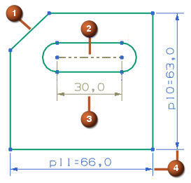

转换至/自参考对象
转换至/自参考对象
使用转换至/自参考对象命令，可将草图曲线从活动转换为参考对象，或将尺寸从驱动转换为参考对象。
下游命令不使用参考曲线，并且参考尺寸不控制草图几何图形。
默认情况下，NX 用双点划线线型显示参考曲线：
|
 |
|
位于何处？
|
工具条 |
(建模) (草图任务环境) |
|
菜单 |
(建模)工具→草图约束→转换至/自参考对象 (草图任务环境)工具→约束→转换至/自参考对象 |
|
快捷菜单 |
右键单击尺寸→转换为参考或转换为驱动 右键单击曲线→转换为参考或转换为活动的 |